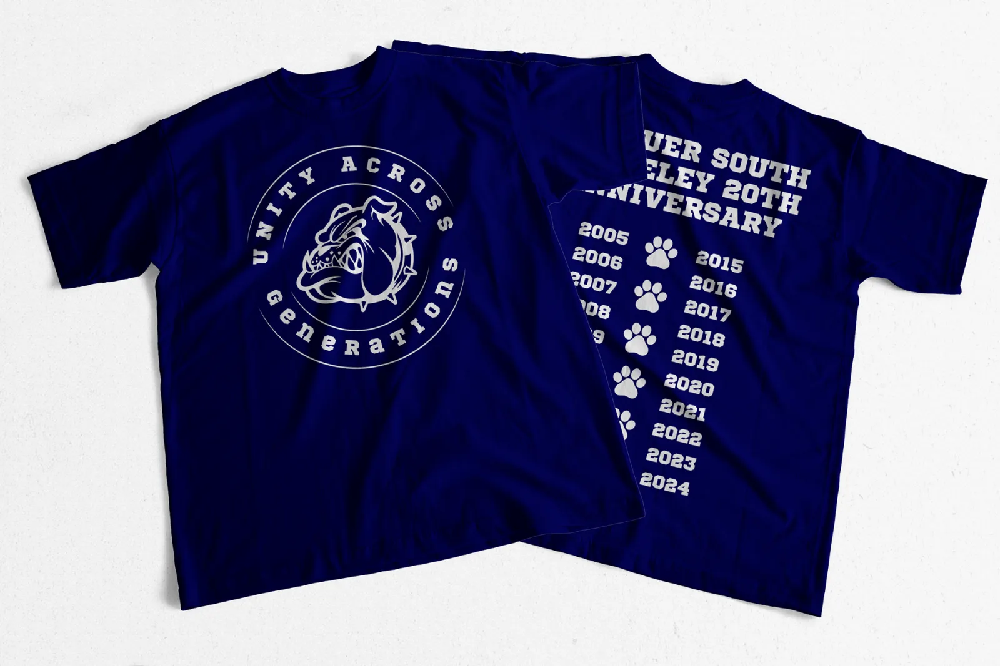
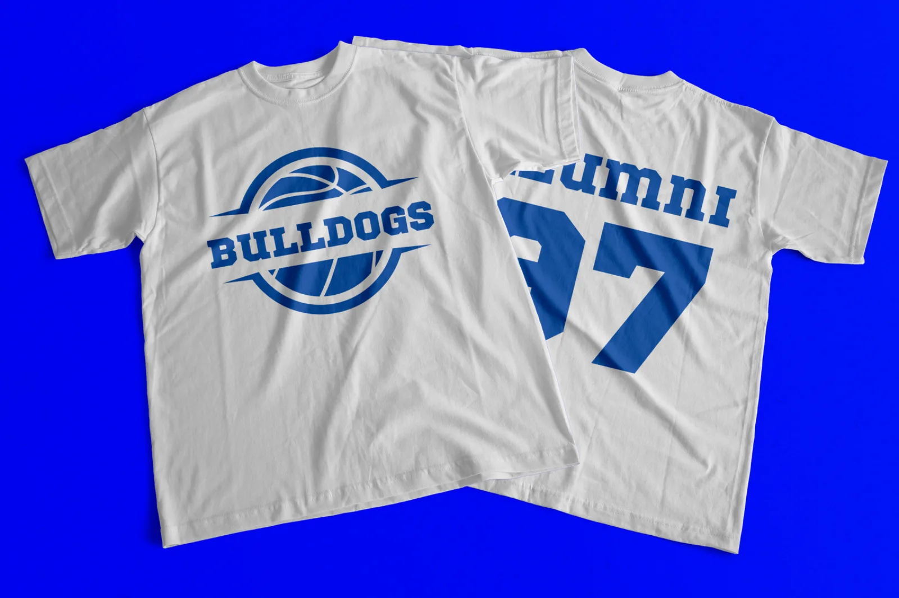
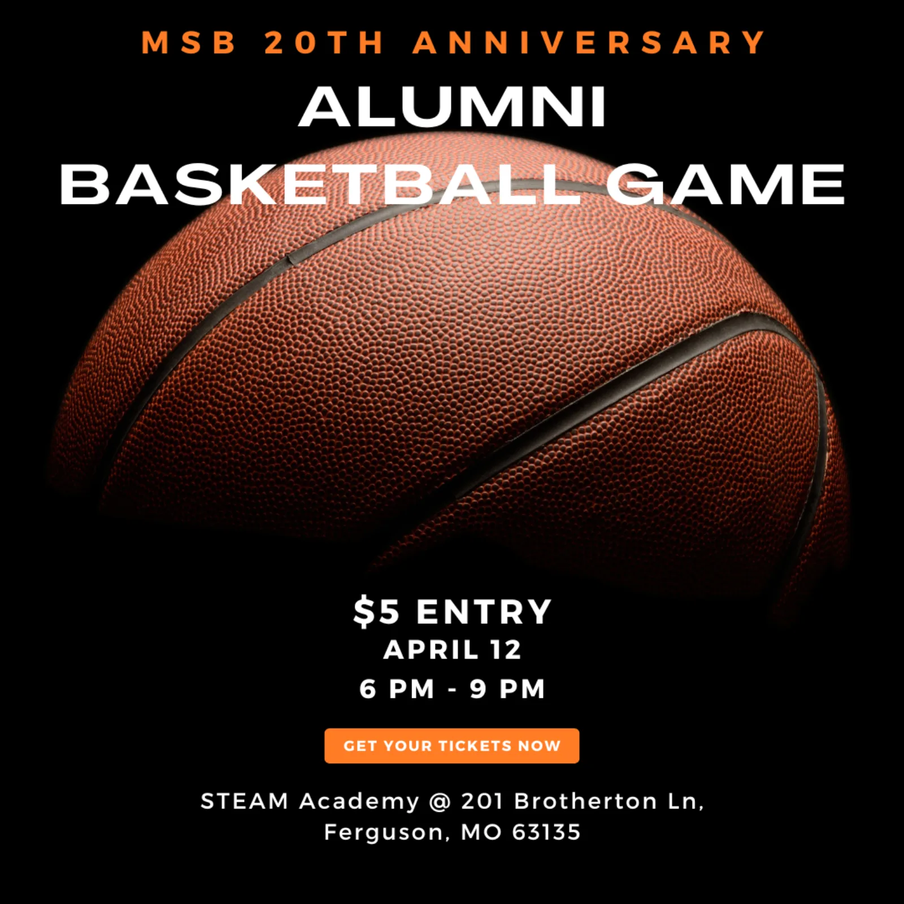
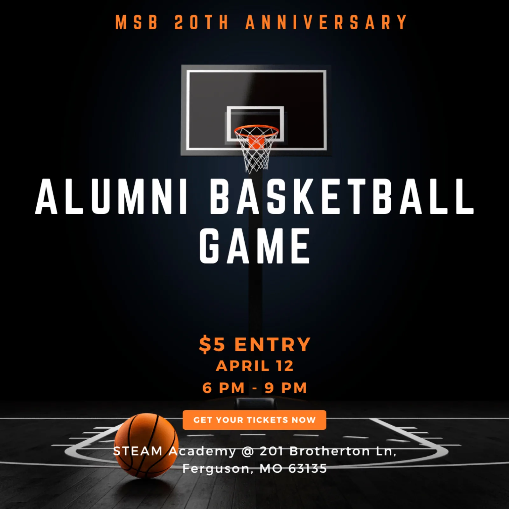
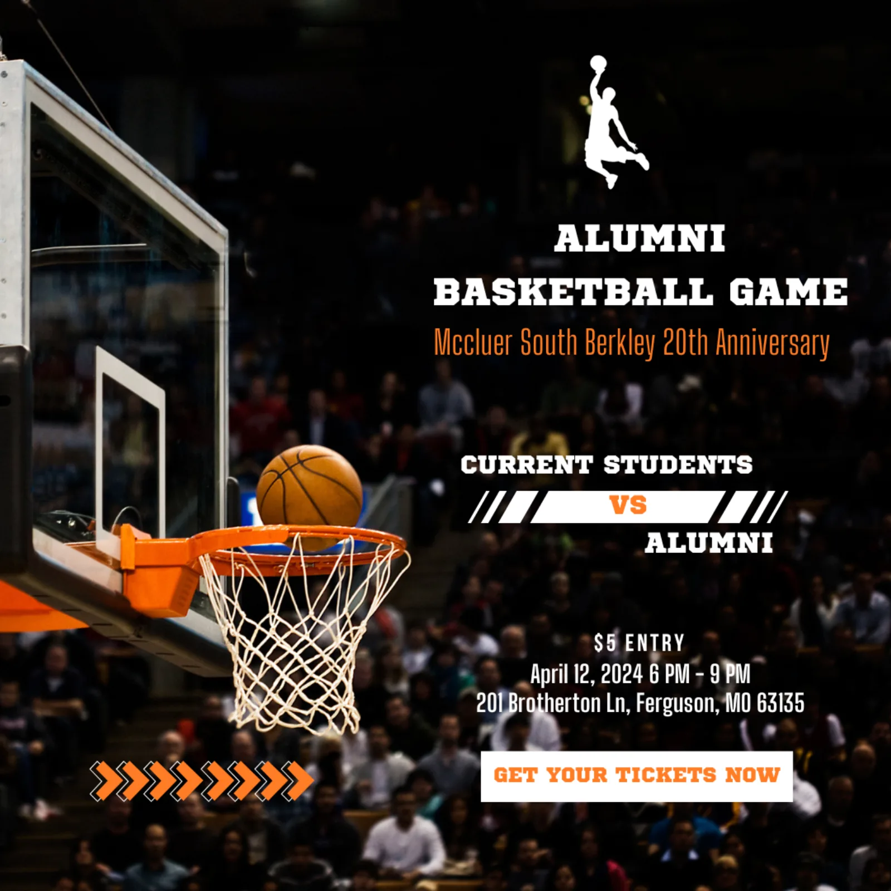
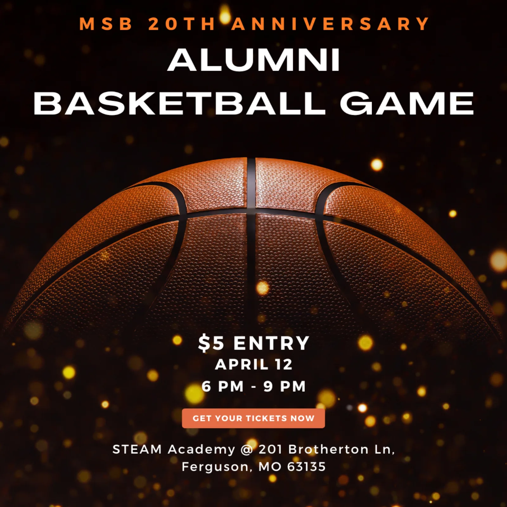
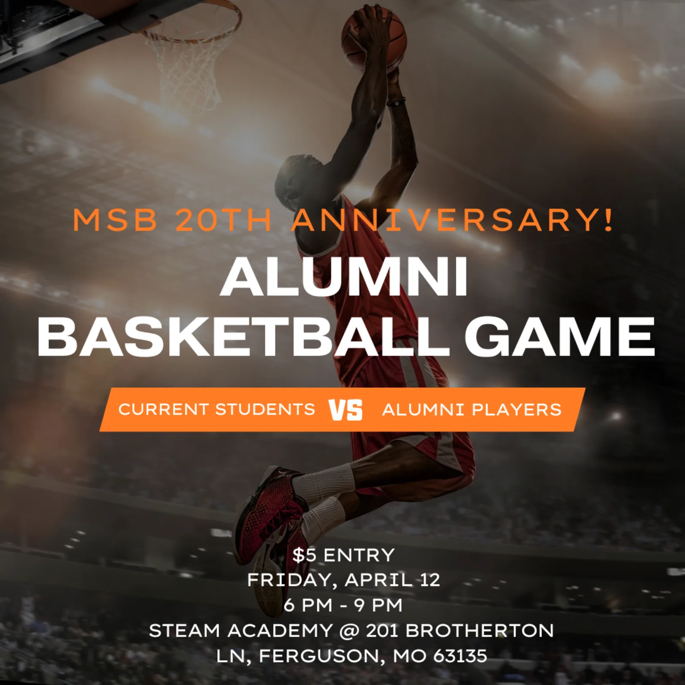
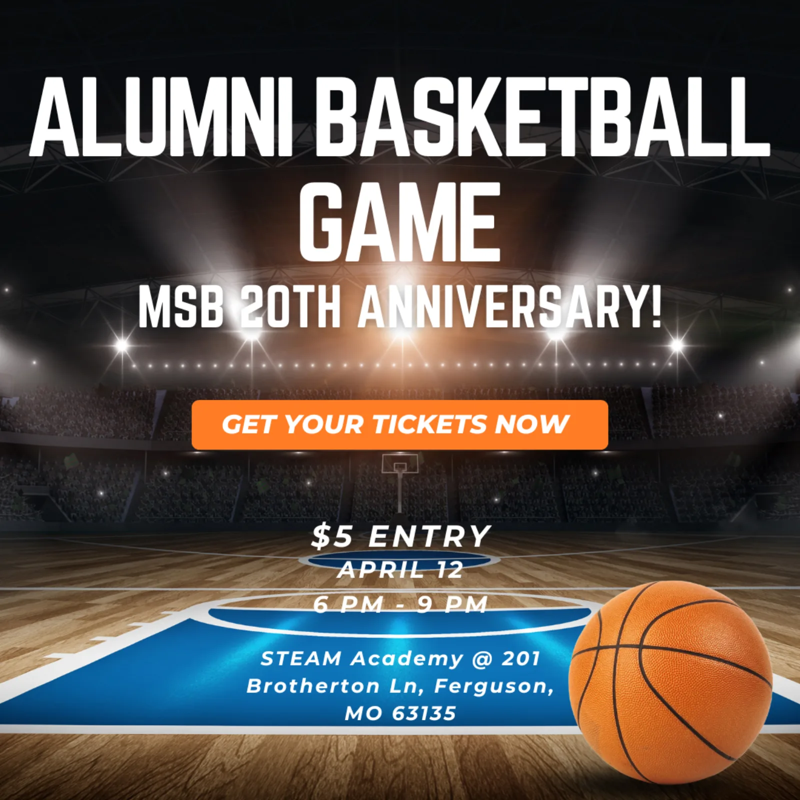

Project Overview
Honoring legacy while driving community excitement.
This was my first comprehensive graphic design project, where I created the complete visual identity for McCluer South Berkley's 20th Anniversary Alumni Charity Basketball Game. The project encompassed everything from jersey design to social media marketing materials, requiring a cohesive brand system that would resonate with both current students and returning alumni.
The challenge was to create designs that honored the school's legacy while feeling fresh and exciting enough to drive event attendance. The result was a unified visual campaign featuring custom jerseys, event posters, and digital marketing materials that successfully promoted the charity event throughout the school and surrounding community.
Project Scope
Client
McCluer South Berkley High School
20th Anniversary Celebration
Event Details
Alumni Charity Basketball Game
April 12, 2024 · 6 PM - 9 PM
$5 Entry
Deliverables
Jersey Designs (3 versions)
Event Flyers (6 variations)
Social Media Graphics
Promotional Materials
Design Goals
Create cohesive brand identity
Drive event attendance
Honor 20-year legacy
Engage community
Design Process
The design process began with understanding the dual audience: current students who needed excitement and energy, and alumni who wanted nostalgia and school pride. I developed a color palette centered around the school's navy blue and incorporated bold orange accents for the anniversary celebration.
For the jerseys, I created three distinct versions: the classic navy "Bulldogs" design with alumni numbering, a commemorative "Unity Across Generations" 20th anniversary shirt, and a light-colored variant for team differentiation. Each design maintained consistent branding while serving different purposes within the event.
The promotional materials evolved through multiple iterations, experimenting with different basketball imagery, typography treatments, and layout compositions. I created six distinct flyer variations to maintain visual interest across different marketing channels while ensuring consistent messaging about the $5 entry, date, time, and location.
Design Gallery

Official Game Jerseys
Navy blue "Bulldogs" design with alumni numbering and custom logo

Commemorative T-Shirts
"Unity Across Generations" design featuring 20-year timeline with paw prints

Alternate Jersey Design
Light-colored variant for team differentiation with blue graphics

Primary Event Flyer
Clean typography with dramatic basketball imagery

Court Atmosphere Design
Basketball hoop perspective emphasizing the game environment

Competition Theme
Highlighting the matchup between current students and alumni players

Premium Event Feel
Elegant basketball close-up with golden bokeh effects

Dynamic Action Shot
Player in motion emphasizing the competitive spirit

Arena Atmosphere
Dramatic stadium view with bold typography and call-to-action
Results & Impact
The comprehensive design campaign successfully promoted the charity basketball game throughout McCluer South Berkley and the surrounding Ferguson community. The cohesive visual identity created excitement around the 20th anniversary celebration and effectively communicated event details across multiple touchpoints.
The jersey designs became keepsakes for participants, while the varied flyer designs allowed for strategic placement across different venues and digital platforms. This project taught me the importance of creating flexible design systems that maintain brand consistency while adapting to different contexts and applications.
Most importantly, this first design project demonstrated how thoughtful visual communication can bring communities together, connecting current students with alumni, supporting a charitable cause, and celebrating two decades of school history through design.